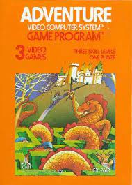

Sus origenesLa historia de los videojuegos tiene su origen en la década de 1950 cuando, tras el fin de la Segunda Guerra Mundial, las potencias vencedoras de la guerra, construyeron los primeros superordenadores programables. Los primeros intentos por implementar programas de carácter lúdico (inicialmente programas de ajedrez) no tardaron en aparecer, y se fueron repitiendo durante las siguientes décadasDécada de 1970Un hito importante en el inicio de los videojuegos tuvo lugar en 1971 cuando Nolan Bushnell comenzó a comercializar Computer Space, una versión de Space War, aunque otra versión recreativa de Space War como fue Galaxy War puede que se le adelantara a principios de los 70 en el campus de la universidad de Standford. La ascensión de los videojuegos llegó con la máquina recreativa Pong que es considerada la versión comercial del juego Tennis for Two de Higginbotham. El sistema fue diseñado por Al Alcom para Nolan Bushnell en la recién fundada Atari. El juego se presentó en 1972 y fue la piedra angular del videojuego como industria. Durante los años siguientes se implantaron numerosos avances técnicos en los videojuegos (destacando los microprocesadores y los chips de memoria). Aparecieron en los salones recreativos juegos como Space Invaders (Taito) o Asteroids (Atari).Su desarrolloDécada de 1980Los años 80 comenzaron con un fuerte crecimiento en el sector del videojuego alentado por la popularidad de los salones de máquinas recreativas y de las primeras videoconsolas aparecidas durante la década de los 70. Durante estos años destacan sistemas como Oddyssey 2 (Phillips), Intellivision (Mattel), Colecovision (Coleco), Atari 5200, Commodore 64, Turbografx (NEC). Por otro lado en las máquinas recreativas triunfaron juegos como el famoso Pacman (Namco), Battle Zone (Atari), Pole Position (Namco), Tron (Midway) o Zaxxon (Sega). El negocio asociado a esta nueva industria alcanzó grandes cosas en estos primeros años de los 80, pero sin embargo, en 1983 comenzó la llamada crisis del videojuego, afectando principalmente a Estados Unidos y Canadá, y que no llegaría a su fin hasta 1985. Japón apostó por el mundo de las consolas con el éxito de la Famicom (llamada en occidente como Nintendo Entertainment System), lanzada por Nintendo en 1983 mientras en Europa se decantaba por los microordenadores como el Commodore 64 o el Spectrum.Década de 1990principios de los años 90 las videoconsolas dieron un importante salto técnico gracias a la competición de la llamada "generación de 16 bits" compuesta por la Mega Drive, la Super Nintendo Entertainmet de Nintendo, la PC Engine de NEC, conocida como Turbografx en occidente y la CPS Changer de (Capcom). Junto a ellas también apareció la Neo Geo (SNK) una consola que igualaba las prestaciones técnicas de un arcade pero demasiado cara para llegar de forma masiva a los hogares. Esta generación supuso un importante aumento en la cantidad de jugadores y la introducción de tecnologías como el CD-ROM, una importante evolución dentro de los diferentes géneros de videojuegos, principalmente gracias a las nuevas capacidades técnicas.En la epoca actualDécada de 2000En el 2000 Sony lanzó la anticipada PlayStation 2 y Sega lanzó otra consola con las mismas características técnicas de la Dreamcast, nada más que venia con un monitor de 14 pulgadas, un teclado, altavoces y los mismos mandos llamados Dreamcast Drivers 2000 Series CX-1. Microsoft entra en la industria de las consolas creando la Xbox en 2001. Nintendo lanzó el sucesor de la Nintendo 64, la Gamecube, y la primera Game Boy completamente nueva desde la creación de la compañía, la Game Boy Advance. Sega viendo que no podría competir, especialmente con una nueva máquina como la de Sony, anunció que ya no produciría hardware, convirtiéndose sólo en desarrolladora de software en 2002. |

|